🎧 Auriculares Inicial / Calidad-Precio
MDR-7506 (Sony)
~US$98
El estándar de broadcast y postproducción desde hace treinta años. Se pliega, suena honesto y aguanta la mochila.
Cerrado · cable · adaptador 3,5 mm + 6,3 mm
Ver precio en Amazon ↗
🎧 Auriculares Inicial / Calidad-Precio
ATH-M50x (Audio-Technica)
~US$159
El cerrado que sale en todas las fotos de estudio. Fácil de mover, tres cables en la caja, sirve para grabar y para revisar la mezcla.
Cerrado · cable desmontable · 3 cables incluidos
Ver precio en Amazon ↗
🎧 Auriculares Inicial / Calidad-Precio
DT 770 PRO (80 Ω) (beyerdynamic)
~US$140
Almohadillas de velour y copa cerrada que no dejan escapar el clic. La versión de 80 Ω funciona directo de la interfaz.
Cerrado · 80 Ω · velour · cable de 3 m
Ver precio en Amazon ↗
🎧 Auriculares Inicial / Calidad-Precio
MDR-M1 (Sony)
~US$198
El monitor cerrado moderno de Sony: plano para decidir y cómodo para una jornada de diez horas.
Cerrado · cable desmontable · adaptador 6,3 mm
Ver precio en Amazon ↗
🎧 Auriculares Inicial / Calidad-Precio
HD 600 (Sennheiser)
~US$280
La referencia abierta con la que todavía se traducen las mezclas. Pide un amplificador decente y lo devuelve.
Abierto · 300 Ω · cable desmontable
Ver precio en Amazon ↗
🎧 Auriculares Estudio Pro
HD 800 S (Sennheiser)
~US$1,978
Espacio y detalle de nivel referencia para revisiones de masterización y escucha larga. Con un amplificador dedicado.
Abierto · 300 Ω · cable balanceado incluido
Ver precio en Amazon ↗
🎧 Inalámbricos Inicial / Calidad-Precio
WF-1000XM5 (Sony)
~US$200
La referencia del trayecto: ANC fuerte, EQ usable y tamaño de bolsillo entre sesiones.
True wireless · ANC · 8 h + estuche
Ver precio en Amazon ↗
🎧 Inalámbricos Inicial / Calidad-Precio
MOMENTUM True Wireless 4 (Sennheiser)
~US$231
Afinación audiófila en formato true wireless, con LE Audio y un EQ de verdad para escuchar de referencia en movimiento.
True wireless · ANC · 7,5 h + estuche
Ver precio en Amazon ↗
🎧 Inalámbricos Inicial / Calidad-Precio
QuietComfort Ultra Earbuds (Bose)
~US$279
La cabina más silenciosa y el ajuste más cómodo, con audio espacial para revisar una mezcla en un sitio ruidoso.
True wireless · ANC · 6 h + estuche
Ver precio en Amazon ↗
🎧 Con cable Inicial / Calidad-Precio
CHU II (Moondrop)
~US$23
El IEM más barato en el que se puede confiar: un solo driver dinámico limpio, cable desmontable y sin graves inflados.
In-ear · dinámico de 10 mm · 2 pines 0,78 mm
Ver precio en Amazon ↗
🎧 Con cable Inicial / Calidad-Precio
SE215 PRO (Shure)
~US$91
Aislamiento de monitor de escenario que también sirve para grabar. El cable y las almohadillas aguantan giras reales.
In-ear · dinámico · MMCX desmontable · estuche rígido
Ver precio en Amazon ↗
🎧 Con cable Inicial / Calidad-Precio
SE846 Gen 2 (Shure)
~US$679
Cuatro armaduras balanceadas y filtros intercambiables: el IEM de referencia que los ingenieros llevan de verdad en la mochila.
In-ear · 4 drivers · desmontable · 3 filtros
Ver precio en Amazon ↗
🔊 Monitores Inicial / Calidad-Precio
Eris 3.5 (par) (PreSonus)
~US$100 / 1 par
El altavoz de escritorio que cabe en un dormitorio: medios honestos, entradas TRS balanceadas y una pareja a precio contenido.
Woofer de 3,5" · 25 W por lado · 1 par
Ver precio en Amazon ↗
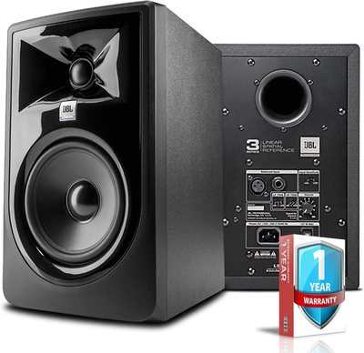
🔊 Monitores Inicial / Calidad-Precio
305P MkII (par) (JBL)
~US$284 / 1 par
El nearfield de 5 pulgadas que dibuja una imagen más ancha de lo que cuesta. Un par basta para una habitación pequeña y un grave grande.
Woofer 5" · 2 vías · 1 par
Ver precio en Amazon ↗
🔊 Monitores Inicial / Calidad-Precio
HS5 (par) (Yamaha)
~US$340 / 1 par
El nearfield de cono blanco con el que todos aprenden a mezclar. Medios honestos, nada de halagos y cabe en un escritorio pequeño.
Woofer 5" · activo · 1 par
Ver precio en Amazon ↗
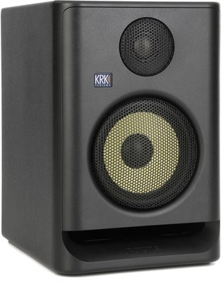
🔊 Monitores Inicial / Calidad-Precio
ROKIT 5 G5 (par) (KRK)
~US$398 / 1 par
Con puerto frontal, así que puede ir pegado a la pared: la respuesta de estudio de piso para un grave más lleno.
Woofer 5" · puerto frontal · 1 par
Ver precio en Amazon ↗
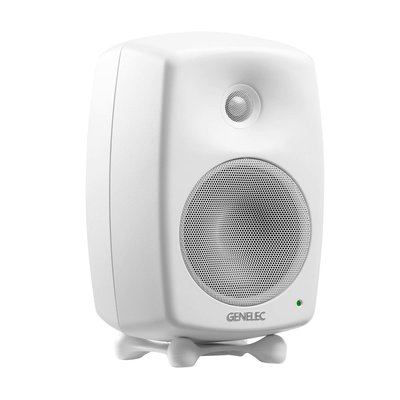
🔊 Monitores Estudio Pro
8030C (par) (Genelec)
~US$2,116 / 1 par
El clásico nórdico de caja de aluminio: neutro, fácil de convivir y el nearfield que un cuarto de masterización mantiene cerca.
Woofer 5" · caja de aluminio · se vende por unidad
Ver precio en Amazon ↗
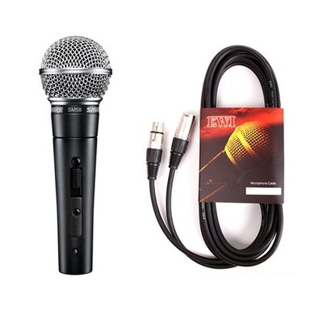
🎙️ Micrófonos Inicial / Calidad-Precio
SM58-LC (Shure)
~US$89
El micro vocal que ha sobrevivido más giras que ningún otro. Dinámico cardioide, construido como un martillo.
Dinámico · cardioide · XLR · incluye pinza
Ver precio en Amazon ↗
🎙️ Micrófonos Inicial / Calidad-Precio
AT2020 (Audio-Technica)
~US$119
El primer condensador que vale la pena comprar: silencioso, neutro y hace que un rincón tratado suene a estudio.
Condensador · cardioide · XLR · 20 Hz–20 kHz
Ver precio en Amazon ↗
🎙️ Micrófonos Inicial / Calidad-Precio
SM7B (Shure)
~US$369
Dinámico de broadcast que graba una voz gruesa en un cuarto sin tratar. Locución, podcast y voces fuertes todo el día.
Dinámico · cardioide · XLR · necesita 60 dB+ de ganancia
Ver precio en Amazon ↗
🎙️ Micrófonos Estudio Pro
TLM 103 (Neumann)
~US$1,295
El micro de voz por defecto en muchas salas: detalle de diafragma grande sin aspereza, con araña y estuche.
Condensador · cardioide · XLR · estuche de madera
Ver precio en Amazon ↗
🎛️ Amplificadores Inicial / Calidad-Precio
L30 II (Topping)
~US$149
Amplificación NFCA limpia y silenciosa con tres pasos de ganancia: suficiente para un auricular de referencia de 300 Ω.
Salida 4,4 mm / 6,3 mm · entrada RCA · 3 pasos
Ver precio en Amazon ↗
🎛️ Amplificadores Inicial / Calidad-Precio
A50s (Topping)
~US$219
Salida balanceada de 4,4 mm y salida de previo, así que la misma caja mueve auriculares y un par de monitores activos.
4,4 mm balanceado · 6,3 mm · salida de previo
Ver precio en Amazon ↗
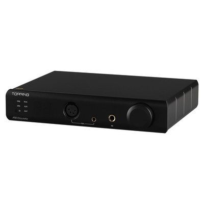
🎛️ Amplificadores Inicial / Calidad-Precio
A90 Discrete (Topping)
~US$599
El amplificador de escritorio definitivo para planares: 9.800 mW, circuito discreto y mando para dejarlo fuera del alcance.
XLR / 4,4 mm / 6,3 mm · mando · previo
Ver precio en Amazon ↗
🔌 DAC Inicial / Calidad-Precio
SU-1 (SMSL)
~US$72
El DAC limpio más barato que aún mide bien: AK4493S, USB/óptico/coaxial y sin color añadido.
AK4493S · USB / óptico / coaxial · salida RCA
Ver precio en Amazon ↗
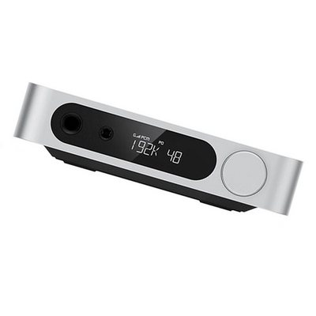
🔌 DAC Inicial / Calidad-Precio
K11 (FiiO)
~US$143
DAC y amplificador en una caja pequeña, con salida de 4,4 mm que mueve la mayoría de auriculares de estudio.
DAC + amplificador · 4,4 / 6,3 mm · USB / coaxial / óptico
Ver precio en Amazon ↗
🔌 DAC Inicial / Calidad-Precio
ZEN DAC 3 (iFi)
~US$229
Calidez Burr-Brown con un amplificador de auriculares real, más salida balanceada para monitores activos.
PCM 768 / DSD512 · 4,4 mm balanceado · RCA
Ver precio en Amazon ↗
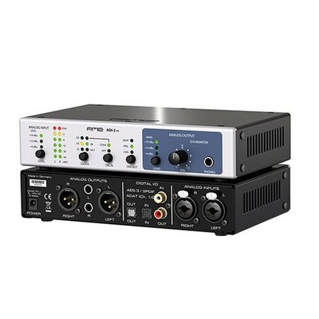
🔌 DAC Estudio Pro
ADI-2 DAC FS (RME)
~US$1,299
DAC y amplificador de monitoreo con EQ y dinámica integrados: corrige la curva de un auricular y guarda el ajuste.
DAC de 2 canales · EQ / dinámica · USB · mando
Ver precio en Amazon ↗
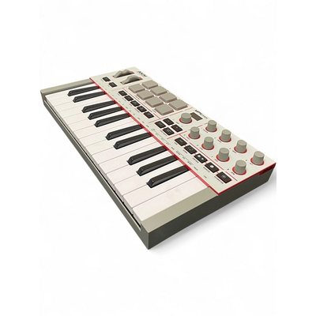
🎹 Teclados MIDI Inicial / Calidad-Precio
MPK mini IV (Akai Professional)
~US$89
25 teclas y ocho pads MPC que caben en una mochila: el cuaderno de bocetos para hacer beats fuera del escritorio.
25 teclas mini · 8 pads · USB-C
Ver precio en Amazon ↗
🎹 Teclados MIDI Inicial / Calidad-Precio
KeyLab Essential 61 mk3 (Arturia)
~US$299
61 teclas, faders y encoders mapeados a tu DAW, con Analog Lab V incluido para tener sonidos al instante.
61 teclas · 9 faders · USB / MIDI
Ver precio en Amazon ↗
🎹 Teclados MIDI Inicial / Calidad-Precio
Launchkey 61 MK4 (Novation)
~US$330
61 teclas semipesadas con pads de aftertouch polifónico y la integración con Ableton más estrecha que existe.
61 teclas semipesadas · 16 pads · USB-C
Ver precio en Amazon ↗
🎹 Pianos digitales Inicial / Calidad-Precio
P-145 (Yamaha)
~US$500
88 teclas contrapesadas, un piano CFX decente y Bluetooth: el portátil que vive debajo del escritorio.
88 teclas · acción GHS · Bluetooth · 2 × 7 W
Ver precio en Amazon ↗
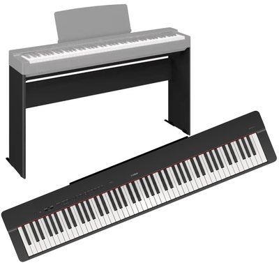
🎹 Pianos digitales Inicial / Calidad-Precio
P-225 (Yamaha)
~US$630
El piano de escenario delgado de Yamaha: mejor acción que el P-145 y lo bastante ligero para llevarlo a una sesión.
88 teclas · acción GHC · Bluetooth · 2 × 7 W
Ver precio en Amazon ↗
🎹 Pianos digitales Inicial / Calidad-Precio
FP-30X (Roland)
~US$680
Acción de martillo PHA-4 con escape, sonido SuperNATURAL y Bluetooth de audio/MIDI. El piano de la sala de clases.
88 teclas · PHA-4 · Bluetooth audio/MIDI
Ver precio en Amazon ↗
🎹 Pianos digitales Estudio Pro
FP-90X (Roland)
~US$2,300
El portátil de gama alta: teclas híbridas PHA-50, motor de piano modelado y altavoces para un escenario pequeño.
88 teclas · PHA-50 · piano modelado · 2 × 25 W
Ver precio en Amazon ↗
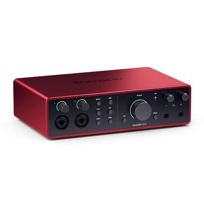
🎚️ Interfaces Inicial / Calidad-Precio
Scarlett Solo 4th Gen (Focusrite)
~US$160
Un previo de micro, una entrada de instrumento y drivers que simplemente funcionan: la primera interfaz de un cantautor.
1 in / 2 out · USB-C · 24 bits/192 kHz
Ver precio en Amazon ↗
🎚️ Interfaces Inicial / Calidad-Precio
iD4 MKII (Audient)
~US$194
Un previo de calidad de consola y un DI JFET en una caja de dos entradas, con dos salidas de auriculares para componer a dúo.
2 in / 2 out · USB-C · 2 salidas de auriculares
Ver precio en Amazon ↗
🎚️ Interfaces Inicial / Calidad-Precio
Scarlett 2i2 4th Gen (Focusrite)
~US$225
La primera interfaz por defecto: dos previos limpios, ganancia automática y headroom para una voz fuerte.
2 in / 2 out · USB-C · 24 bits/192 kHz
Ver precio en Amazon ↗
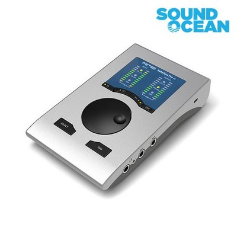
🎚️ Interfaces Inicial / Calidad-Precio
Babyface Pro FS (RME)
~US$999
La referencia de fiabilidad y latencia. Funciona igual en una sala fija y en exteriores; TotalMix sobrevive al cambio de computadora.
12 in / 12 out · USB · TotalMix FX
Ver precio en Amazon ↗
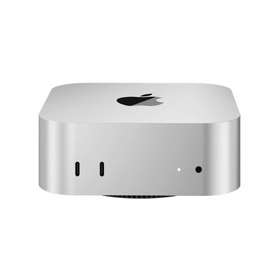
💻 Computadoras Inicial / Calidad-Precio
Mac mini M4 (16 GB / 256 GB) (Apple)
~US$743 (marketplace)
La computadora de estudio más silenciosa por dólar: M4, 16 GB de memoria unificada y ningún ventilador audible en una sesión de Pro Tools.
M4 · 16 GB · SSD 256 GB · Thunderbolt 4
Ver precio en Amazon ↗
💻 Computadoras Inicial / Calidad-Precio
MacBook Air 13" M4 (Apple)
~US$1,000
Silenciosa, ligera y suficientemente rápida para grabar y mezclar fuera del estudio; el portátil de composición que se vuelve rig de respaldo.
M4 · 16 GB · 256 GB · 13,6" Liquid Retina
Ver precio en Amazon ↗
💻 Computadoras Estudio Pro
MacBook Pro 14" M4 Pro (Apple)
~US$2,388
Liquid Retina XDR para editar a ojo, ventiladores que siguen callados en sesiones largas y el chip Pro para proyectos grandes.
M4 Pro · 24 GB · 512 GB · 14,2" XDR
Ver precio en Amazon ↗
🖥️ Escritorio Inicial / Calidad-Precio
Soportes ISO-155 (IsoAcoustics)
~US$136
Inclinación y altura que desacoplan los monitores del escritorio: la mejora real más barata para una habitación pequeña.
Hasta 40 lb · 14 posiciones · 1 par
Ver precio en Amazon ↗
🖥️ Escritorio Inicial / Calidad-Precio
Brazo de monitor LX (Ergotron)
~US$200
Pone la pantalla a la altura del oído y deja el escritorio libre para un teclado, una superficie de faders y un café.
Hasta 34" / 25 lb · VESA 75/100 · aluminio pulido
Ver precio en Amazon ↗
🖥️ Escritorio Inicial / Calidad-Precio
Aeron (talla B) (Herman Miller)
~US$649
La silla que hace posibles las jornadas de diez horas de mezcla; la malla te mantiene fresco y PostureFit sujeta la zona lumbar.
Talla B · PostureFit · malla · garantía de 12 años
Ver precio en Amazon ↗